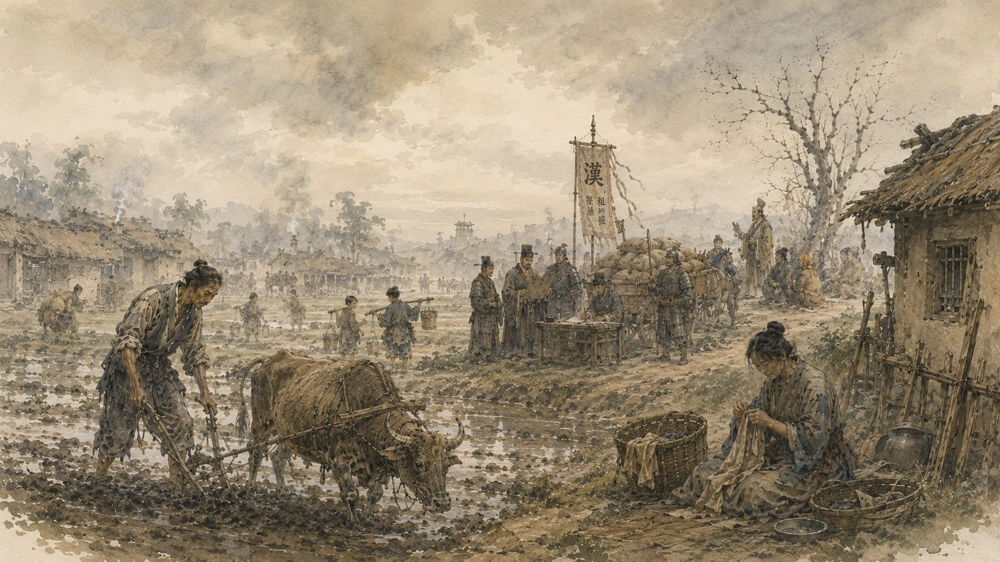
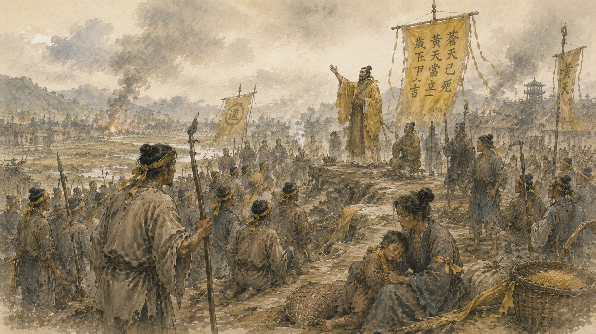
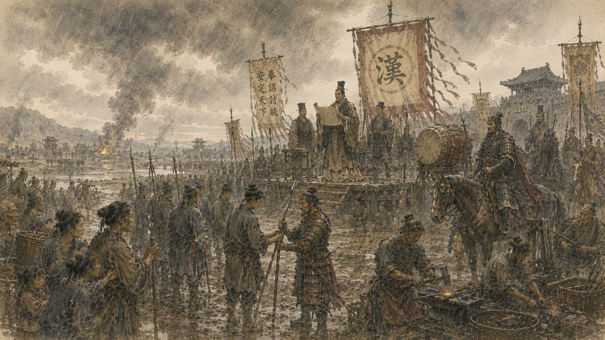
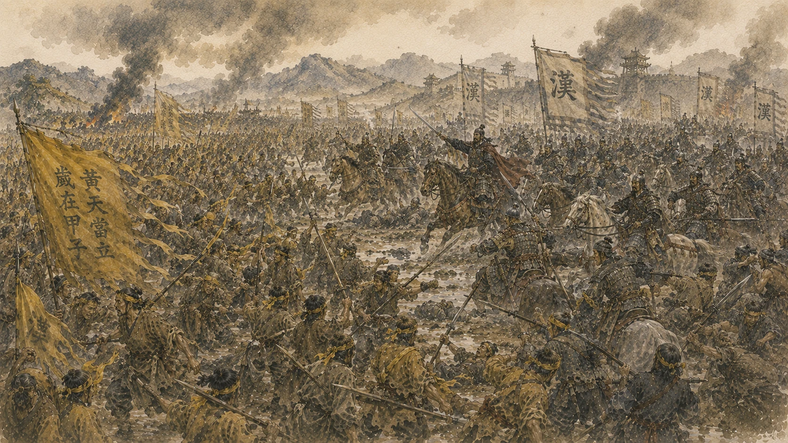
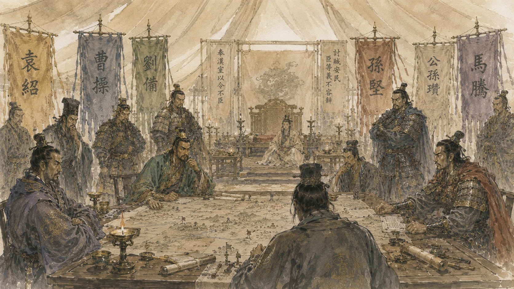

漢
一
El Imperio Han
漢
La Dinastía Han llevaba cuatrocientos años gobernando China. Era el mayor Imperio que el mundo conocido había visto. Sus leyes, su escritura, su filosofía conformaban una civilización sin igual. Pero en los palacios, los eunucos controlaban al Hijo del Cielo. El orden eterno había empezado a resquebrajarse.

二
La Gente
民
~168 d.C.
Ochenta millones de almas trabajan la tierra de China. Pagan impuestos a señores que pagan a señores. Las sequías y las inundaciones se alternan con el hambre. Un campesino no sabe qué ocurre en la capital. Solo sabe que este año, de nuevo, el cielo no ha sido generoso.

三
El Cielo Amarillo
黃
184 d.C.
Un maestro taoísta llamado Zhang Jue recorre China portando una promesa: el Cielo se renueva. «El Cielo Azul ha muerto. El Cielo Amarillo se alzará.» Medio millón de hambrientos se atan un turbante amarillo a la frente. No es una rebelión. Es una señal del Cielo. Y el Imperio tiembla.

四
La Respuesta del Imperio
征
184 d.C.
El Hijo del Cielo ordenó levantar milicias en cada provincia. Los señores respondieron con sus propios ejércitos, cada uno con sus propias ambiciones. Y en los campos de todo el Imperio, campesinos que al amanecer araban el barro fueron soldados al atardecer. El Imperio se defendía. Y al hacerlo, forjó a los hombres que un día lo devorarían.

五
El Conflicto
亂
184 — 185 d.C.
Los Turbantes Amarillos cayeron. Pero los ejércitos levantados para aplastarlos no se disolvieron. Cada señor había comprendido lo mismo: la lealtad al Hijo del Cielo valía mientras fuera conveniente. Y un ejército en campo propio vale más que cualquier edicto imperial.

六
La Fractura
裂
190 d.C.
Dieciocho estandartes. Dieciocho ambiciones. Se llamaban a sí mismos aliados en nombre de Han. Pero alrededor de esa mesa ya trazaban fronteras que aún no existían. Cao Cao. Liu Bei. Sun Jian. Sus nombres no eran todavía reinos. Pronto lo serían.
天下大勢，
分久必合，
合久必分
«Lo que lleva mucho tiempo dividido, inevitablemente se une.
Lo que lleva mucho tiempo unido, inevitablemente se divide.»
Abertura del Romance de los Tres Reinos · Luo Guanzhong, c. 1400
魏
蜀
吳
Tres reinos. Un trono. Incontables vidas.
Explorar las Eras